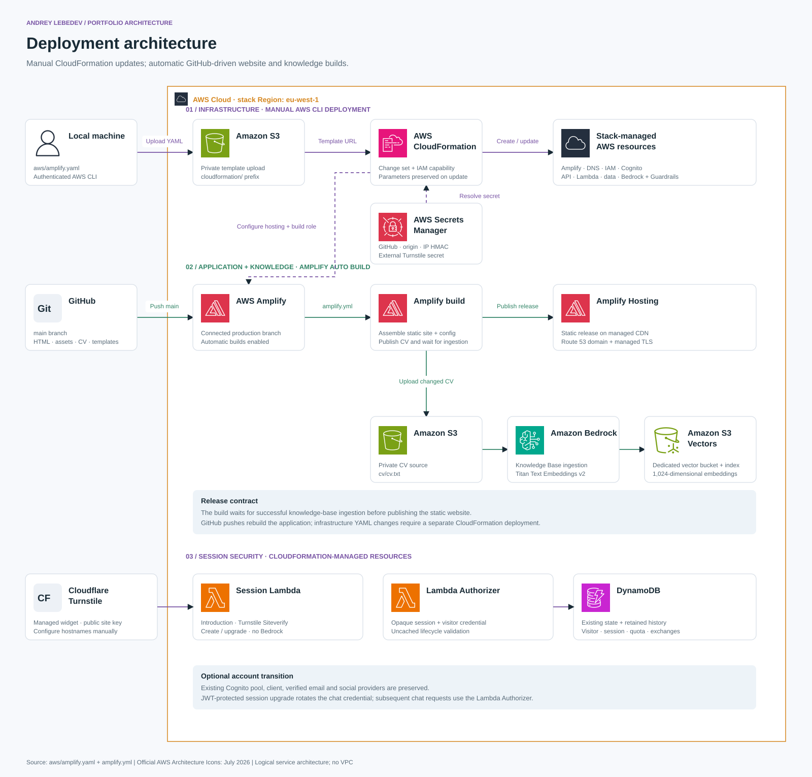
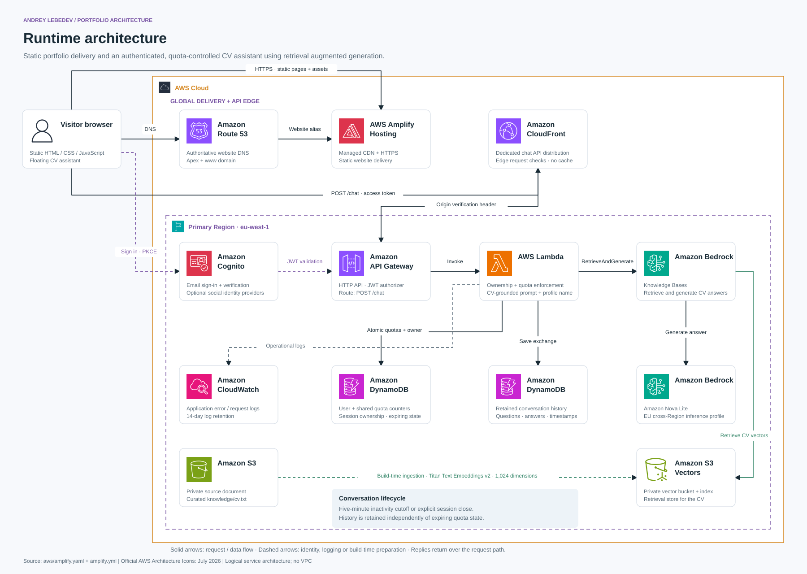

A fast static portfolio
HTML, CSS and JavaScript are versioned in GitHub and published through Amplify Hosting. Route 53 provides the website's authoritative DNS; Amplify manages HTTPS and CDN delivery.
A static portfolio on AWS Amplify, paired with an authenticated AI assistant that answers questions from my CV. Two architecture views show how the system is deployed and how it handles a conversation.
The public pages load independently of the assistant. Authentication, quotas, conversation storage and model inference sit behind a dedicated chat API.
HTML, CSS and JavaScript are versioned in GitHub and published through Amplify Hosting. Route 53 provides the website's authoritative DNS; Amplify manages HTTPS and CDN delivery.
Cognito handles identity. A dedicated CloudFront distribution fronts API Gateway and Lambda, which enforce ownership and allowances before calling Bedrock.
A reviewed text CV feeds a Bedrock Knowledge Base backed by S3 Vectors. DynamoDB stores quota state and conversation history in separate tables.
These views describe the implementation in aws/amplify.yaml and amplify.yml. They are logical architecture diagrams, rather than a live health dashboard. AWS services use the official AWS Architecture Icons (July 2026 release).
CloudFormation manages the infrastructure through an explicit deployment. Amplify automatically builds and publishes application changes pushed to the connected GitHub branch.

The local AWS CLI uploads the infrastructure template to private S3 and submits a CloudFormation change set. The stack defines hosting, DNS, IAM, identity, API services, storage and the knowledge base. Secrets Manager supplies the GitHub connection token.
A push to the production branch starts an Amplify build. The build assembles the static pages and assets, fetches official App Store artwork and writes the public API and Cognito configuration supplied by the stack.
The publisher uploads changed CV text to the private source bucket. Bedrock ingestion splits it into chunks and uses Titan Text Embeddings v2 to populate the separate S3 vector bucket and index. This is indexing for retrieval, rather than model training.
The build waits for successful knowledge-base ingestion before publishing the site. The connected branch rebuilds automatically; changes to the CloudFormation template require a separate infrastructure deployment.
The static website and chat API have separate delivery paths. The application runs primarily in Ireland (eu-west-1); Nova Lite uses an EU cross-Region inference profile.

Route 53 resolves the website domain and Amplify Hosting delivers static content over HTTPS. The first chat question prompts sign-in through Cognito's authorization-code flow with PKCE. Email registration includes verification; social providers are optional integrations.
The browser sends its access token to the chat CloudFront distribution. Edge checks restrict paths, methods and origins; API Gateway validates the JWT. Lambda checks the private origin token, conversation ownership and atomic DynamoDB quota counters before inference.
Lambda calls Bedrock's RetrieveAndGenerate operation. Every request includes a numbered Bedrock Guardrail version. Denied topics filter programming deliverables, command tutorials and unrelated tasks on input and output; a prompt-attack filter checks attempts to override the assistant’s role. The knowledge base retrieves CV passages from S3 Vectors for Amazon Nova Lite. The prompt limits answers to supported experience and can address the visitor using a sanitized name from Cognito.
Lambda saves the question, answer and timestamps in the history table and returns the answer over the same request path. A guardrail intervention produces a fixed scope refusal, which is saved instead of a model completion; source excerpts are omitted. Follow-up questions reuse the Bedrock session until five minutes of inactivity or an explicit session close starts a new conversation.
The design separates public content, identity, persistent quota counters and retained conversation data. AWS managed services provide the platform without a dedicated VPC or application servers.
| Component | Responsibility and data | Lifecycle / boundary |
|---|---|---|
| GitHub + CloudFormation | Versioned static source, curated CV and infrastructure definition. Provider credentials remain in Secrets Manager. | Infrastructure updates are explicit; source pushes trigger Amplify application builds. |
| S3 + S3 Vectors | A private source bucket contains the text CV; a separate vector bucket and index contain its embeddings. | Encrypted storage. Knowledge ingestion reads only the CV prefix; template uploads use a separate prefix. |
| Bedrock Guardrails | A stack-managed, versioned policy checks inputs and outputs for denied topics and inputs for prompt attacks. The assistant can discuss my technical background, but is not a coding tutor. | Attached to every knowledge-base generation request. Missing configuration or service errors fail closed. Managed classification is probabilistic, and guardrail evaluations add usage charges. |
| Cognito | Account identity, verified email and available profile attributes. Lambda reads the profile through the authenticated userInfo endpoint. | Access tokens are short-lived and stored in the browser tab's session storage. Tokens are excluded from conversation history. |
| DynamoDB state | Per-user limits of 10 questions per minute and 100 per UTC day; shared limits of 1,000 per UTC day and 10,000 per UTC month. One persistent row per normalized user stores both minute and day counters, UTC period start/reset times, owner and verified email. One separate row stores global day and month counters. | Revision-checked transactions enforce the allowances and renew expired periods in place. Legacy rows expire through TTL; new quota rows are persistent. |
| DynamoDB history | Questions, answers, timestamps and conversation summaries linked to the Cognito user ID, with the verified, normalized email on each record. Conversation summaries also hold session ownership and the inactivity deadline. Individual exchanges avoid an ever-growing transcript item. | No automatic history expiry. Point-in-time recovery is enabled; the table is retained on stack deletion. Browser closure is best effort, backed by a five-minute inactivity deadline. |
| CloudWatch Logs | Application failure diagnostics, service error codes and request identifiers, rather than application transcript logging. | 14-day retention. AWS account-level Bedrock invocation logging is configured separately. |
CloudFront checks request shape, API Gateway validates identity, and Lambda verifies the origin token and ownership. CORS is a browser restriction; authentication is enforced separately. API responses are not cached.
User and global allowances are consumed atomically before Bedrock runs. API throttling and a 600-token answer limit further bound model use. These controls do not impose a hard cap on total AWS charges; the site has no WAF web ACL.
The model receives retrieved CV evidence, the question and an optional display name. A strict scope prompt and versioned Bedrock Guardrails help keep replies on topic. Guardrails and grounding reduce unwanted responses but do not guarantee perfect classification or accuracy. The recruiter-specific CV tool remains a demonstration.
Source repository: Andremoniy/Andremoniy.lu ↗. The diagrams are stored as scalable SVG files with PNG exports; service icons are embedded so the SVGs remain portable.